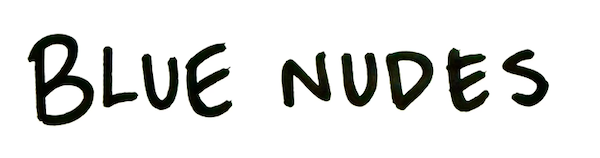
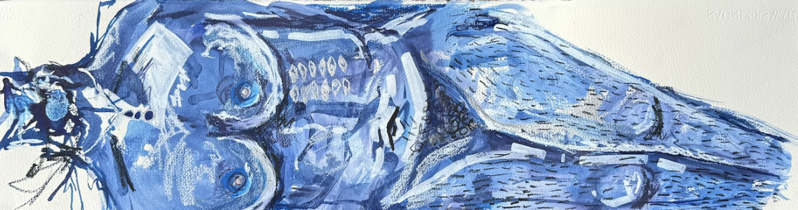
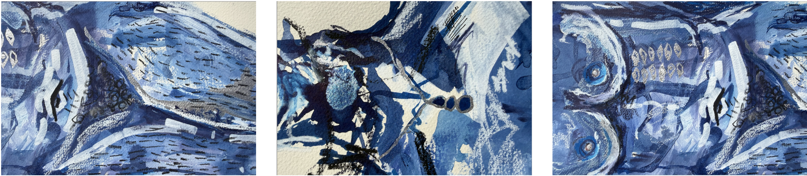
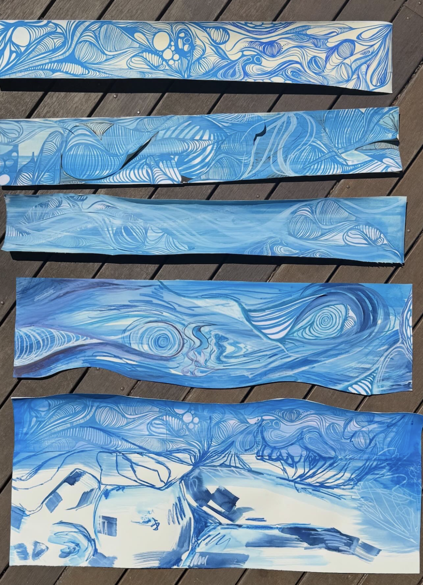
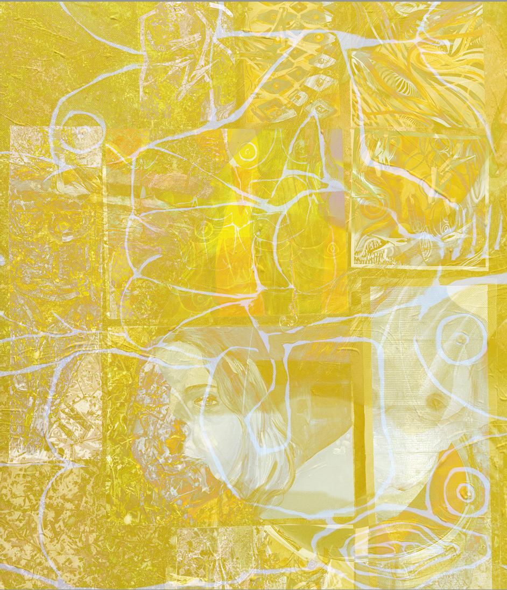
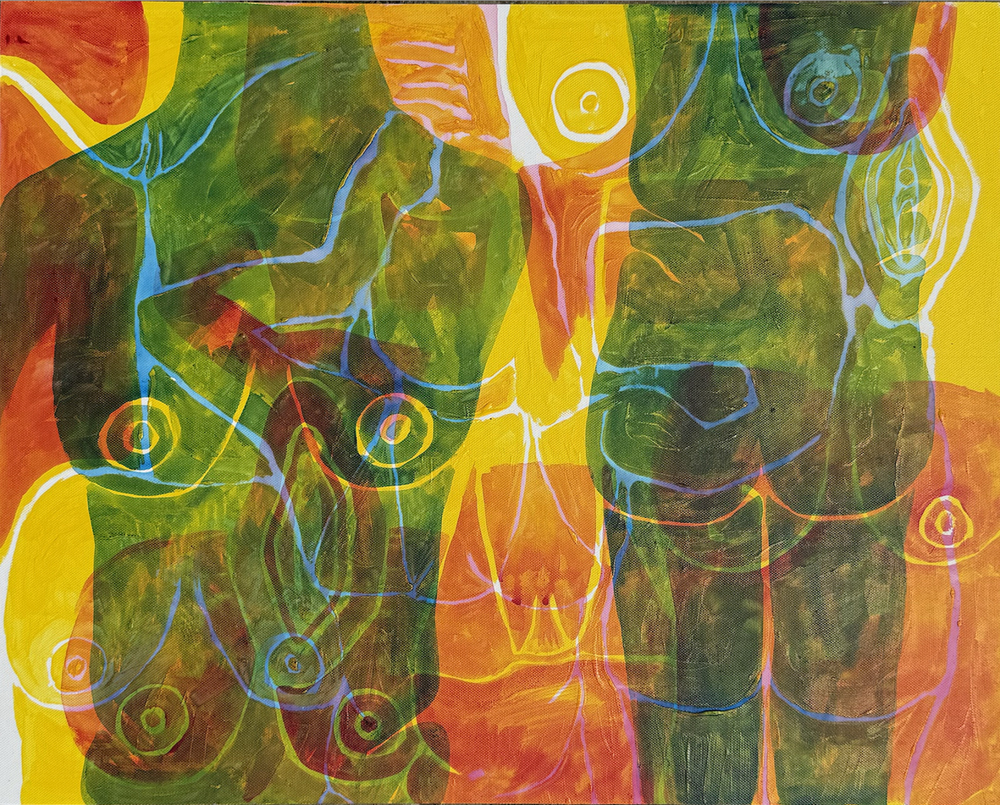

Staring contest, Acrylic paint, masking tape, magazine and newspaper collage materials, on 2 x A4 paper, 42cm x 29.7cm
My work Staring Contest documents the ideas that continuously circulate in my mind, the concept of a woman’s body being under constant surveillance from the world, not only to inspect her physicality but also to ensure she is “well-behaved.” Through looser brushstrokes contrasted with harsh, clean lines left by masking tape, I reveal the duality of women: how our femininity is gentle, beautiful, and tonal, yet surrounded by an inner strength and sturdiness, much like the white lines that frame the figure’s body. On the right, the eyes are trapped within cage-like lines, reflecting how society has confined women through imposed expectations, training our minds — and our gaze, to follow certain rules. Collaged within the work are images of Baroque women from eras when they could not train as artists but existed merely as subjects. To the right, eyes cut from newspapers represent various political and public figures such as Alexandria Ocasio-Cortez and Hillary Clinton. Staring Contest serves as my commentary on the scrutiny women continue to face in the modern day and have endured throughout history.
Just Don't Take my sparkle, Ink, Acrylic Paint, Gouache, Water-soluble crayons on 150gsm watercolour paper, 17cm x 60cm


Layers of My Body, Amongst Layers of Natural Life, Gouache, Water Soluble crayon, collage, scanning, white pens, on 150 gsm watercolour paper, A1 size (59cm x 81cm)

This piece, "Layers Of My Body Amongst The Layers Of Natural Life," conceptually intertwines the human form with the organic world, employing overlaying, erasure, and collage techniques to explore the porous boundaries between body and nature. The act of overlaying signifies the intersection and coexistence of internal and external realms—human anatomy merging with natural textures and forms, creating a visual palimpsest that suggests an interdependent existence rather than discrete entities. Erasure disrupts clarity and permanence, evoking the transient nature of life and the fragility of human presence within the broader ecosystem, while also implying spaces of absence and memory. The collage technique, enhanced through brush and pen, introduces fragmented yet interconnected narratives, layering tactile and visual elements that echo ecological complexity and bodily multiplicity. The nuanced layering invites reflection on the inherent biomorphism in human and natural forms—highlighting the organic rhythms, contours, and rhythms that bind us to earth’s phenomena. The multifaceted process symbolises the continuous transformation and regeneration intrinsic to both human and ecological life cycles. This work speaks to the fluidity of identity, embodiment, and environment, addressing themes of coexistence, vulnerability, and resilience. By visually negotiating these layered interactions with sensitive mark-making, the piece transcends literal representation to evoke an immersive dialogue between flesh and nature’s fabric, positioning the body as both subject and ecosystem within the natural world.
RECENT WORKS
BODYBRAINBODY, MIXED MEDIA, (1270x720)

I CAN BE YOUR FAVOURITE COLOUR, ACRYLIC ON CANVAS BOARD (A2)
